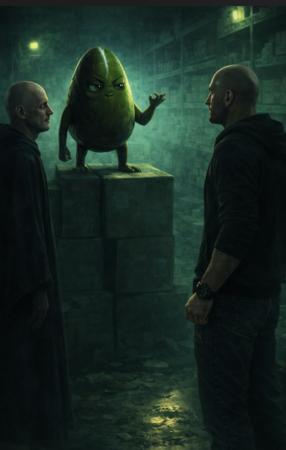

DOCUMENTO NON CLASSIFICATO – ORA IGNOTA
Venerdì 13 marzo 2026
Luogo: magazzino, settore B. Dietro le cerniere. Dove l'olio ha lasciato ancora una traccia sottile sul pavimento.
Il magazzino aveva smesso di assestarsi da ore.
Era immobile. Compatto. Il tipo di immobilità che non è riposo ma attesa. Le luci di emergenza tingevano tutto dello stesso verde malato di sempre, quel verde che non riscalda e non illumina ma rivela, come i raggi di una macchina che vede dentro le cose senza chiedere il permesso.
Raffaele era arrivato per primo, questa volta.
Non perché fosse puntuale. Ma perché non riusciva a dormire. Seduto su uno sgabello che aveva trascinato dal reparto produzione, con le braccia conserte e la mascella stretta, aveva l'aria di uno che ha preso una decisione e adesso deve solo aspettare che il mondo si adegui.
Sul suo volto non c'era entusiasmo. Non c'era eccitazione da complotto.
C'era qualcosa di più semplice e più pericoloso: risentimento invecchiato bene.
Albucaos scivolò dentro dal corridoio laterale senza fare rumore, cosa notevole per una figura della sua corporatura.
Lungo il percorso aveva lasciato i suoi segni abituali — una scatola ruotata, un'etichetta storta, un bancale spostato di quel tanto che bastava a generare confusione senza giustificare un'indagine.
Nulla di drammatico.
Solo il mondo reso leggermente meno leggibile, come una frase a cui qualcuno ha tolto la punteggiatura.
Si sistemò nell'ombra con la sua solita espressione vuota e soddisfatta.
Non salutò Raffaele, ma neppure Raffaele lo salutò
Aspettarono.
QuaSim arrivò esattamente dopo.
Si materializzò dall'angolo più buio del magazzino come se l'ombra lo avesse semplicemente rilasciato, e la cicatrice sulla sua testa catturò il verde delle luci di emergenza con quella precisione inquietante che ormai nessuno dei due trovava più casuale. Si posizionò al centro dello spazio dove la luce era più forte. Dove entrambi potevano vederlo chiaramente.
— Bene — disse.
La sua voce era bassa ma non sussurrava.
— Siete qui. Possiamo cominciare.
Raffaele spostò il peso sullo sgabello.
— Voglio sapere esattamente cosa ottengo.
QuaSim lo guardò con quella sua espressione precisa.
— Ottieni quello che ti è sempre spettato — disse. — Spazio. Riconoscimento. Un territorio che nessuno potrà più ridisegnare intorno a te senza il tuo consenso.
— E il bicchiere?
Una pausa breve.
— Il bicchiere verrà svuotato.
Raffaele non sorrise. Ma qualcosa nella sua mascella si allentò.
Albucaos emise quel suono basso che poteva essere una risata.
— Silenzio — disse QuaSim.
Albucaos tacque.
— Il piano è semplice. Tre fasi.
Si mosse lentamente mentre parlava.
— Prima fase: destabilizzazione.
Albucaos continuerà il suo lavoro. Ma con precisione.
Piccole perturbazioni.
Ordini che arrivano tardi.
Materiali nel posto sbagliato.
L'azienda deve iniziare a dubitare di se stessa.
— Seconda fase: isolamento.
Simone. Giulia. SimoneQ. E il seme. Funzionano perché si fidano gli uni degli altri. Dobbiamo rompere quella fiducia. Non con lo scontro Ma con il dubbio.
Gli occhi di QuaSim si posarono su Raffaele.
— Qui entri tu.
Raffaele annuì lentamente.
— E la terza fase?
QuaSim rimase immobile.
— La terza fase è SimoneQ.
Il nome cadde nel magazzino come un sasso nell'acqua ferma.
— SimoneQ è il punto più vulnerabile. Non perché sia debole. Perché pensa troppo....Lo farò io. Personalmente.
Silenzio. Albucaos spostò una scatola di tre centimetri.
— E Elisa? chiese Raffaele.
QuaSim guardò il pavimento unto.
— Elisa è uno strumento che crede di essere un'architetta, per ora è utile. Poi si vedrà.
Albucaos fece una domanda.
— Quando cominciamo?
QuaSim si voltò verso l'uscita.
— È già cominciato.
E sparì nell'ombra.
Raffaele rimase seduto ancora qualche secondo.
Poi uscì.
Albucaos fu l'ultimo.
Prima di sparire nel corridoio spostò un'ultima scatola. Questa volta di dieci centimetri.
Stava prendendo la mano.
Il magazzino tornò immobile.
Compatto.
In attesa.
Da qualche parte al piano di sopra, un bicchiere trasparente conteneva acqua fredda e due foglioline verdi che dormivano.
Ignare.
Per ora.
— Fine documento 🥑
← Vai al Giorno 30 Vai al Giorno 32 →